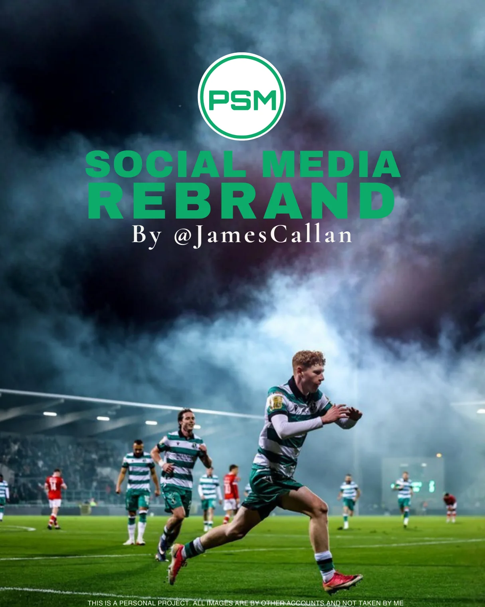

I like the work behind a recognisable football identity. The type, colour, rhythm and tiny decisions that make something feel like it belongs to a club or a publication.

Weston-super-Mare AFC
A photography-first direction built around bold matchday graphics, player features and a consistent design system.
Explore the full project ↗
Podium Sports Management
Player-first branding with a distinct green palette, editorial type and announcement concepts across a range of player milestones.
Explore the project ↗Touchline Sport
Building an independent football publication’s visual language across covers, article artwork, social posts and longer-form design.
Visit Touchline ↗Club & Campaign Concepts
Selected football brand ideas, creative concepts and campaigns. Concept projects are labelled separately from commissioned work.
View artwork ↗Social Design Systems
Making a graphic is one thing. Finding a format you can use consistently, without everything looking exactly the same, is another.
Explore graphics ↗